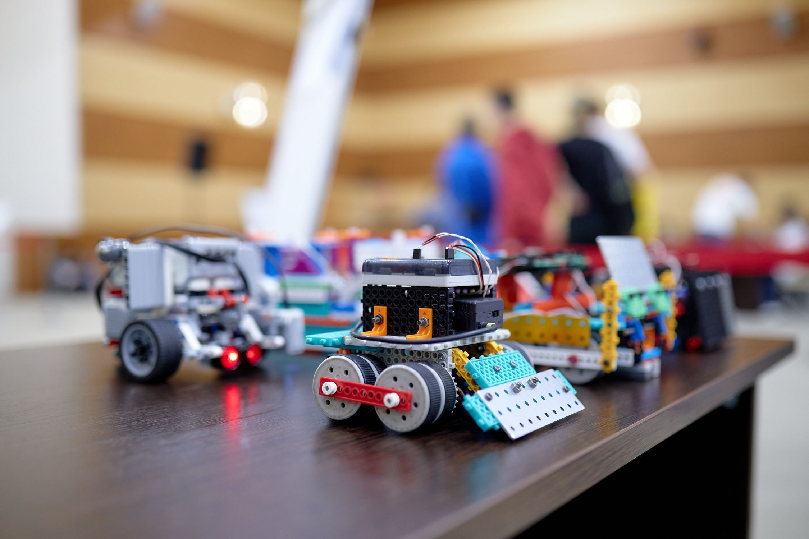

Главный кредитный аналитик ← кредитный аналитик ← специалист-стажер
ВТБ ИЮЛЬ 2021-ПО НАСТ. ВРЕМЯ
- Выполнение функций контактного лица со стороны Банка для клиентов, координация в
решении вопросов, возникающих в процессе обслуживания клиентов
- Проведение анализа бизнеса клиентов, отраслей, рынков, на которых они (клиенты) работают
- Контроль за целевым использованием кредитных средств
- Гашение основного долга и процентов
- Ведение Журнала мониторингов
- Подготовка кредитно-обеспечительной документации
- Контроль отлагательных условий по решению кредитного комитета
- Формирование кредитного/Гарантийного и прочих видов досье по выданным продуктам
банка
- Подготовка и отправка досье/досыла в центры хранения
- Поиск информации о потенциальных и действующих клиентах в открытых источниках,
анализ данных о различных сферах бизнеса и сегментах рынка
- Взаимодействие с подразделениями Банка (юридическое подразделение, залоговое
подразделение, клиентское подразделение)

IT-консультант
ДАЛЬНЕВОСТОЧНЫЙ ФЕДЕРАЛЬНЫЙ УНИВЕРСИТЕТ МАРТ-АПРЕЛЬ 2020 Г.
- Проведение онлайн-консультаций для сотрудников, студентов и преподавателей Дальневосточного федерального университета по работе с платформой Microsoft Teams
- Удаленная настройка и тестирование оборудования

Волонтер блока "Аккредитация"
ВОСТОЧНЫЙ ЭКОНОМИЧЕСКИЙ ФОРУМ СЕНТЯБРЬ LOTTE HOTEL 2018 Г. - 2019 Г.
- Работа с базами данных на платформе 1С
- Работа с персональными данными

Волонтер Всероссийской робототехнической олимпиады
ДАЛЬНЕВОСТОЧНЫЙ ФЕДЕРАЛЬНЫЙ УНИВЕРСИТЕТ 2018 Г.
- Организация мероприятия